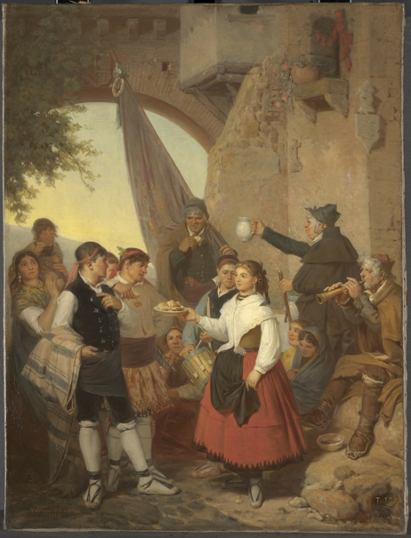
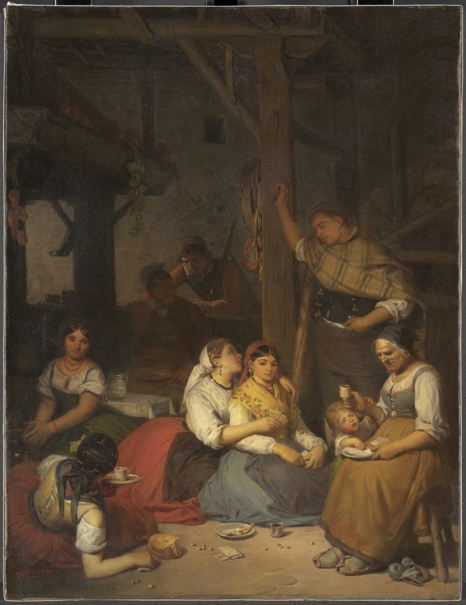

A Prado Múzeum első alkalommal mutatja be együtt azt a nyolc festményt, amelyeket Valeriano Domínguez Bécquer 1866 és 1867 között készített a Museo Nacional de Pinturas (más néven Museo de la Trinidad) megbízásából. A múzeum bezárása után a műveket a Pradóba helyezték át.
A feladat elvégzéséhez Bécquer támogatást kapott az 1865. február 6-án kiadott királyi rendelet alapján. Ezt a támogatást 1868-ban szüntették meg, II. Izabella királynő trónfosztását követően. A festmények együttese 1877-ben kezdett szétszóródni, amikor az egyes műveket hosszabb távra különböző intézményeknek adták kölcsön.
7/13/2026 - 10/4/2026

